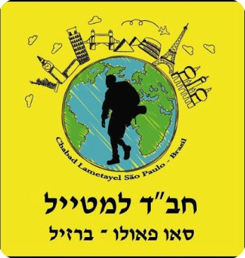
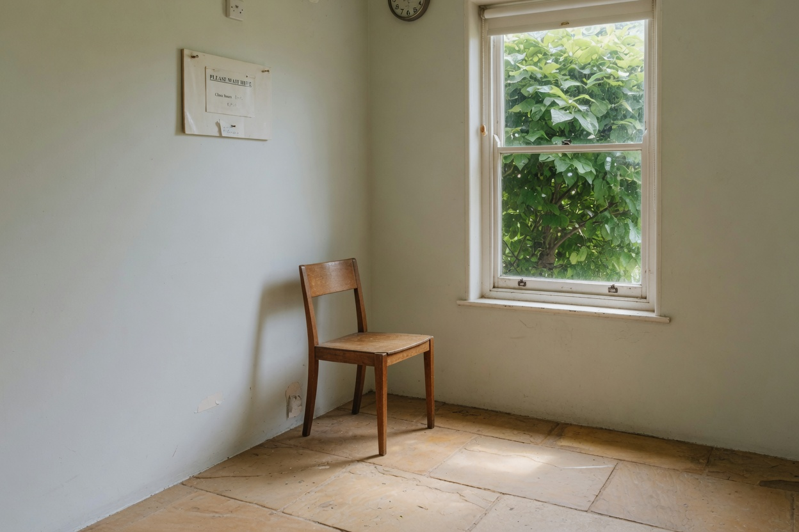
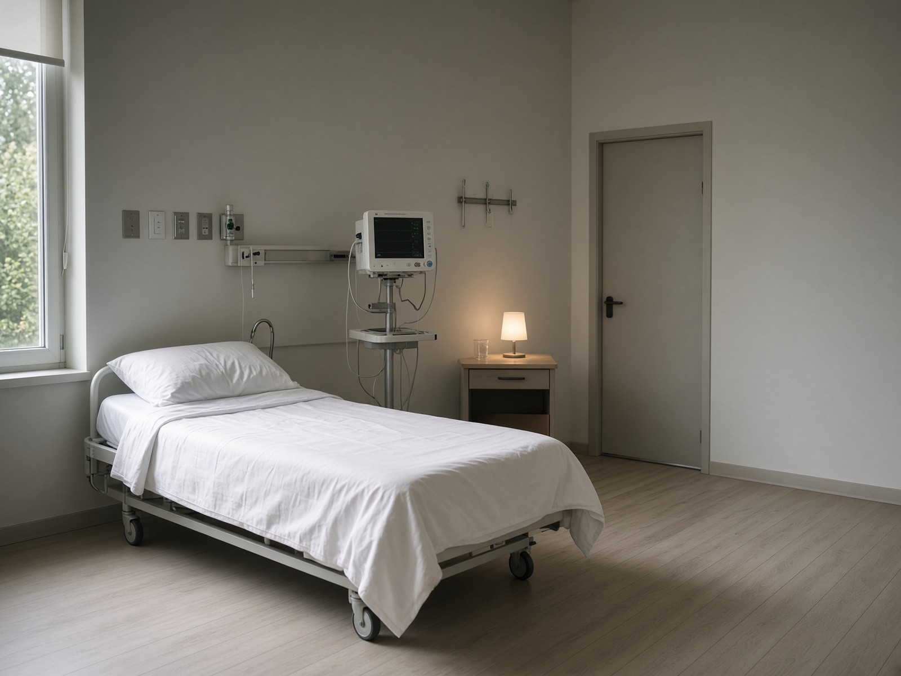
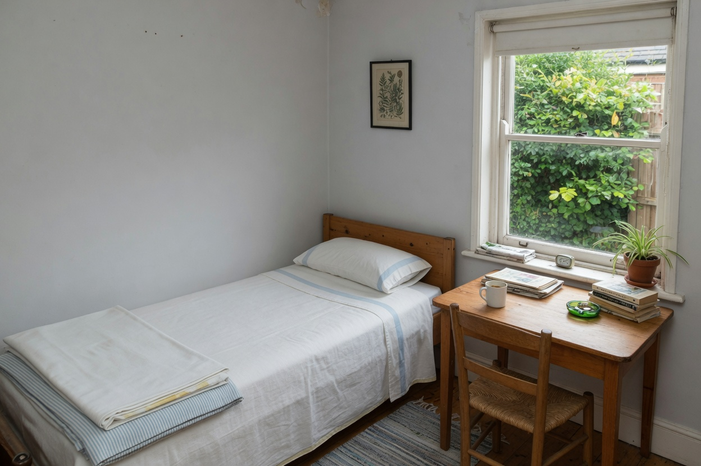

שחרור רגשי
עבודה על הזיכרונות והדפוסים שעוצרים אתכם - פוסט-טראומה, דיכאון, חרדה ותגובות לחץ.

חב"ד למטייל סאו פאולו השארת פרטיםחב"ד סאו פאולו · סאו פאולו, ברזיל
אוניברסיטת סטנפורד
90%
ירידה בסימפטומים בקרב
30 לוחמי קומנדו
ב-18 באפריל 2026, באירוע חגיגי בבית הלבן, חתם הנשיא טראמפ על צו המזרז את המחקר והשימוש באייבוגן, חומר המופק משורש של שיח אפריקאי, שהוכיח את עצמו בשנים האחרונות כפתרון קסם ללוחמי יחידות עילית הסובלים פוסט טראומה, דכאון, חרדה ופגיעות מוחיות.
מה ששכנע את טראמפ לנקוט בצעד כה דרמטי ויוצא הדופן, הן תוצאותיו הדרמטיות ויוצאות הדופן של מחקר שערכה אוניברסיטת סטנפורד בקרב 30 לוחמי קומנדו אמריקאים. המחקר הראה כי לוחמים שעברו טיפול באייבוגן חוו ירידה של כ-90% בסימפטומים הקשים מהם הם סבלו בעקבות חשיפה למוות, אובדן, אלימות ופעמים רבות גם פגיעות פיזיות במהלך שירותם הצבאי.
כהוקרה על התרומה האדירה שלך למדינת ישראל ולעם היהודי, חב"ד סאו פאולו השיג תרומה יעודית המאפשרת לנו לסדר לכם טיפול פה, בברזיל, עם מעטפת מקצועית ורפואית.
מדוע דווקא בברזיל? בעוד ארה"ב מגלה את האייבוגן רק בשנים האחרונות, במדינת סאו פאולו השימוש בו מוסדר וחוקי כבר עשרות שנים. הניסיון הרב שנאסף בקרב הרופאים והמוסדות העוסקים בכך, מבטיח טיפול מקצועי ובטוח. אז אם אתם מגיעים לדרום אמריקה בכדי לנקות את הראש או מעוניינים להגיע עד לפה בכדי לזכות בהתחלה חדשה, אתם מוזמנים להשאיר פרטים.

חיילים המוכרים על ידי משרד הביטחון כסובלים מפוסט טראומה.
או
אנחנו יודעים שקבלת הכרה על ידי משרד הביטחון לוקחת זמן והתעסקות. אם אתם חיילי מילואים או סדיר, ששרתו למעלה מ-200 ימים במלחמה גם אתם מוזמנים להשאיר פרטים ונחזור אליכם לשיחת סינון.
תודה. הפרטים נקלטו ונחזור אליכם לשיחת סינון.
עבודה על הזיכרונות והדפוסים שעוצרים אתכם - פוסט-טראומה, דיכאון, חרדה ותגובות לחץ.
מחקרים שכללו צילומי MRI לפני ואחרי הראו שינויים במבנה המוח, כולל גידול בכמות הסינפסות באונה המצחית האחראית על פונקציות ניהוליות כמו תכנון, מיקוד וקשב.
ויסות מערכת העצבים, חזרה לשינה תקינה ובניית תשתית לרווחה לטווח ארוך.
ניתוק רגשי ממשפחה ובנות זוג, אובדן יכולת להרגיש שמחה (אנהדוניה), והימנעות אקטיבית ממקומות, אנשים או טריגרים המזכירים את הטראומה.
שהייה רציפה במצב הישרדותי (Fight or Flight), תגובות בהלה מוגזמות לרעשים או תנועות, קושי להרפות ולהירגע, התפרצויות זעם ועצבנות קיצונית.
אתם מוזמנים להתייעץ איתנו ולקבל פרטים נוספים
לפרטים והרשמה60 Minutes
צפו בתחקיר של 60 Minutes תוכנית התחקירים המובילה בארה"ב על הפוטנציאל הרפואי ומדוע חשוב שהטיפול יעשה במסגרת קלינית
אייבוגאין הוא חומר פעיל ועוצמתי שמופק מהשורש של שיח בשם איבוגה, הגדל ביערות אפריקה. אחרי מאות שנים שבהן שבטים מקומיים השתמשו בו לטקסי ריפוי, הרפואה המודרנית מגלה אותו מחדש כאחד הכלים היעילים ביותר שיש היום לטיפול בפוסט-טראומה (PTSD) ובהתמכרויות.
אייבוגאין פועל במקביל על המון נקודות במוח כדי לעזור לו לבנות קשרים עצביים חדשים מחוץ למעגל הטראומה. בניגוד לחומרים פסיכדליים רגילים שעלולים לנתק אותך מהמציאות, אייבוגאין מכניס את המטופל למצב שדומה לחלום בהקיץ - מסע פנימי אינטנסיבי מאוד שנמשך 12 עד 36 שעות רצופות.
במהלך השעות האלה, המטופל לרוב רואה את אירועי החיים שלו רצים מולו כמו סרט, מתמודד ראש בראש עם שורש הטראומה שיושבת לו בראש, ומשחרר את המטען הרגשי והפיזי שתקוע שם. חשוב מאוד לציין, ברוב המוחלט של המקרים לא מדובר בחוויה נעימה או קלה. זו לא "סטלה" של בריחה, אלא עבודת עומק שנועדה לפרק את הכאב מהיסוד.

מעטפת רפואית
המסע הזה הוא לא משחק, והוא חייב להיעשות באחריות מקסימלית. אייבוגאין משפיע ישירות על מערכת העצבים – הוא יכול להוריד את קצב הדופק ולשנות את הפעילות החשמלית של הלב. לכן, הטיפול חייב להתבצע אך ורק בקליניקה רפואית, תחת השגחת רופא וחיבור למוניטור. לפני שבכלל מתחילים, כל מטופל עובר סינון שכולל א.ק.ג ובדיקות דם כדי לוודא שאין לו בעיות לב רקע שיכולות לסכן אותו.
שורש האייבוגה הוא הלוצינוגן שנמצא בשימוש של תרבויות ילידיות באפריקה כבר מאות שנים. מחקרים מהשנים האחרונות מראים כי שימוש חד-פעמי בו מוביל לתיקון של פגיעות מוחיות ולריפוי טראומות, וישנם סימנים מעודדים המראים אף על סיוע בטיפול בפרקינסון, אלצהיימר ומחלות נוירולוגיות נוספות.
בניגוד לחומרים אחרים, השימוש באייבוגה שלא במסגרת רפואית מסוכן. לקיחתו מובילה לאטקסיה (אובדן שיווי משקל וקואורדינציה) למשך 12–24 שעות, ומצריכה מעקב רפואי צמוד אחר פעילות הלב. חשוב לדעת: הטיפול ניתן במסגרת קלינית בניטור מלא, אך ורק לאחר בדיקות סינון שנעשות במקום
המטופל שוכב על מיטה במשך כ-12 שעות, עם עיניים מכוסות, בשעה שהחומר עובד. רוב המשתמשים מדווחים על חזיונות המעלים אירועים טראומטיים ומשמעותיים. צילומי MRI שנעשו לחיילים לפני ואחרי הטיפול הראו שינויים לטובה במבנה המוח, כולל גידול בכמות הסינפסות באונה המצחית.
הטיפול בשורש האייבוגה נחשב כבר עשרות שנים לטיפול פורץ דרך בהתמכרויות - מסיגריות, מריחואנה ואלכוהול ועד לסמים הקשים ביותר. בניגוד לטיפולי גמילה אחרים, מטופלים רבים מדווחים על סימני גמילה מופחתים משמעותית לאחר הטיפול.

מעטפת לוגיסטית מלאה בשבוע של הטיפול הכולת: לינה, אוכל כשר, הסעות, ליווי, שיחה מקדימה עם איש טיפול ושיחת אינטגרציה לאחריו.
לא כלול
טיסה מישראל לסאו פאולו ובחזרה.
בזמן שרוב העולם עדיין מנסה להבין איך לגשת לטיפול הזה, לברזיל יש כבר כמה עשורים של ניסיון קליני, חוקי ומפוקח עם אייבוגאין. ברחבי ברזיל פועלות קליניקות שלמות המנוהלות על ידי רופאים ופסיכיאטרים שמתמחים ספציפית בעבודה עם השורש הזה. הם למדו לשלב את העוצמה של החומר עם פרוטוקולים מחמירים של רפואה מערבית, כדי להעניק ללוחמים סביבה בטוחה, מקצועית ומבוקרת לחלוטין.
חב"ד למטייל סאו פאולו - ברזיל
בשיתוף בית חב"ד למטייל
סאו פאולו, ברזיל
$8,500 במקסיקו ← בחינם עבורכם
כמתנת חיים על השירות והתרומה שלכם לישראל ולעם היהודי.
אנחנו אוהבים אתכם. מגיע לכם.
לפרטים והרשמה